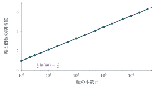

STEP III 2008、第13問
先に進む前に問題を読んでおこう。問題は STEP Support Programme の問題データベースにある： step.maths.org/questions/08-s3-q13
導入
100本の紐を袋に入れ、端だけが外に出るようにしておく。無作為に端を2つ選んで結び、ほどけた端がなくなるまでこれを繰り返す。最後には輪がいくつか絡み合った状態になる。輪はいくつできるだろうか。100本の紐からは、原理的には小さな輪が100個できることもあれば、巨大な輪が1つだけできることもある。驚くべきことに、輪の個数の期待値（expected value）はわずか \(3.3\) 程度であり、紐が4万本あってもまだ \(6\) 程度にすぎない。
鍵となる観察をひとつ押さえると、この問題はほとんど自明になる。何が起こったとしても、結び目を1つ作るたびに、箱の中の紐はちょうど1本減るのである。この過程はそれまでの履歴を「忘れて」しまい、輪の個数は、確率が変化していく独立なコイン投げの和になる。
取りかかる前に
2つの端を結んだあと、紐は何本残っているか（輪になったものはもう「紐」としては数えない）。それは輪ができたかどうかに依存するだろうか。
2つの端が同じ紐のものであれば、その紐は輪になり、\(n - 1\) 本の紐が残る。異なる紐のものであれば、その2本はつながって1本の長い紐になり、やはり \(n - 1\) 本の紐が残る。いずれの場合も、それぞれ2つの端をもつ \(n - 1\) 本の紐が残るのである。
順を追って解く
段階 1 最初の結び目
端は \(2n\) 個ある。そのうち1つを選ぶと、結ばれる相手は残りの \(2n - 1\) 個の端のどれもが等しい確率で選ばれ、そのうちちょうど1つが同じ紐の端である。したがって、最初の結び目が輪を作る確率は \(\frac{1}{2n - 1}\) であり、最初の段階で作られる輪の個数の期待値は \(\frac{1}{2n - 1}\) である。
段階 2 すべての結び目
上の観察から、2回目の結び目を作る前の状況はどうなっているか。3回目の前はどうか。紐が \(k\) 本残っているときに作る結び目で輪ができたかどうかを表す指示変数（indicator）を \(I_k\) とする。\(\mathrm{E}(I_k)\) はそれぞれいくらか。
\(k = n, n - 1, \ldots, 1\) に対して、各結び目を作る前には箱の中に \(k\) 本の紐があり、その結び目は確率 \(\frac{1}{2k - 1}\) で輪を作る（紐が1本だけ残っているときの最後の結び目は、必ず輪を作る）。輪の総数は \(R = I_n + I_{n-1} + \cdots + I_1\) であるから、 \[\mathrm{E}(R) = \sum_{k=1}^{n}\frac{1}{2k - 1} = 1 + \frac13 + \frac15 + \cdots + \frac{1}{2n - 1}. \qed\]
段階 3 分散
指示変数 \(I_k\) は独立か（ある段階で輪ができる確率は、それ以前に起こったことに依存するか）。
各段階で輪ができる確率は、それ以前に何が起こったかによらず \(\frac{1}{2k - 1}\) である。状態はつねに「\(k\) 本の紐」だからである。よって \(I_k\) は独立（independent）であり、分散（variance）は足し合わせることができる： \[\mathrm{Var}(R) = \sum_{k=1}^{n}\frac{1}{2k - 1}\Bigl(1 - \frac{1}{2k - 1}\Bigr) = \sum_{k=1}^{n}\frac{2k - 2}{(2k - 1)^2}. \qed\]
段階 4 4万本の紐
\(2n - 1\) までの奇数の逆数の和を、調和数（harmonic number）を用いて表せ。
\(2n\) までのすべての数の逆数の和から、偶数の逆数の和を引くと \[\sum_{k=1}^{n}\frac{1}{2k - 1} = H_{2n} - \tfrac12H_n \approx \ln(2n) - \tfrac12\ln n = \tfrac12\ln(4n).\] \(n = 40\,000\) のとき \(4n = 160\,000 = 20^4\) であるから、\(\mathrm{E}(R) \approx \frac12 \cdot 4\ln20 \approx 6\) となる。■ （正確な値は \(6.28\) である。この差は、\(H_n \approx \ln n + 0.577\) であることからわかるように、オイラー（Euler）定数（Euler’s constant）に由来する。）

振り返り
過程が何を忘れるかを見つける。各結び目のあと、箱の中は履歴によらず「\(k\) 本の紐」であった。
ここでも指示変数。輪の個数は、結び目1つにつき1つの指示変数の和であった。
独立性から分散が得られる。各段階の確率が過去に依存しないので、指示変数は独立であった。
背後にある数学
対数的な増加
輪の個数の期待値は \(\frac12\ln n\) のように増加し、分散は平均に近い（どちらも小さな確率の和である）。中心極限定理（central limit theorem）（第 12.24 節）により、\(n\) が大きいとき輪の個数は近似的に正規分布（normal distribution）に従い、平均と分散はいずれも約 \(\frac12\ln(4n)\) である。紐が \(40\,000\) 本あるとき、輪はたいてい \(2\) 個から \(11\) 個の間になる。
ランダムな置換の巡回
同じ対数は、\(n\) 個のものの無作為な置換（permutation）の巡回（cycle）の個数にも現れる。その平均は \(H_n \approx \ln n\) である（紐の問題はこれの近い親戚であり、そちらは \(\frac12\ln n\) となる）。ランダムな置換の巡回は少ない。たいてい1つの巨大な巡回が要素の大部分を含み、最大の巡回に含まれる要素の割合の平均は約 \(0.62\) である。これがゴロム–ディックマン定数（Golomb–Dickman constant）である。紐を無作為に結んでいく場合も同様にふるまい、紐の大部分は1つか2つの長い輪に入る。これらの事実はランダムな組合せ構造（random combinatorial structures）の研究の一部であり、整数論とも関係がある（無作為に選んだ整数の素因数は、ランダムな置換の巡回のようにふるまう）。
紐を結ぶこの問題は、物理系の簡単なモデルになっている。溶液中の長い高分子（polymer）は端どうしでつながって輪や鎖を作り、輪の形成の統計は似た規則に従う。結び目理論（knot theory）では、数学者はもっと難しい問い、すなわち無作為な閉じた輪が結ばれている（自明でない結び目になっている）確率はどれくらいか、という問いを考える。長いランダムな輪については、その答えは \(1\) に近づく。これは1988年に De Witt Sumners と Stuart Whittington によって証明された結果である。
思考のスキル
各段階のあとの系の状態が、それまでに行った段階の回数だけで決まるならば、各段階は独立にふるまい、期待値と分散は単純に足し合わせられる。
これはクーポン収集問題（coupon collector problem）（第 9.11 節）の背後にある考え方であり、そこでは各段階が新たな幾何分布の待ち時間となる。この考え方はマルコフ連鎖（Markov chain）の理論にも再び現れる。そこでは現在の状態だけが意味をもつ。
次の一歩
小さな場合。\(n = 2\) のとき、起こりうる場合をすべて書き出し、輪の個数の期待値が \(\frac43\) であることを確かめよ。
1つの大きな輪。過程が、すべての紐を含む1つの輪で終わる確率は \(\prod_{k=2}^{n}\bigl(1 - \frac{1}{2k - 1}\bigr)\) であり、\(n\) が大きいときこれは近似的に \(\sqrt{\frac{\pi}{4n}}\) であることを示せ。（ヒント：この積を \(\binom{2n}{n}\) と関連づけよ。）
置換の巡回。置換を1要素ずつ組み立てていくこと（「中華料理店」構成（Chinese restaurant construction））により、\(n\) 個のものの無作為な置換の巡回の個数の期待値が \(H_n\) であることを示せ。
分散。\(\mathrm{Var}(R) = \mathrm{E}(R) - \sum_{k=1}^{n}\frac{1}{(2k - 1)^2}\) であること、および引かれている和が \(\frac{\pi^2}{8}\) に収束することを示せ。
さらに学ぶために
Peter Winkler, Mathematical Puzzles: A Connoisseur’s Collection（A K Peters）。紐を結ぶパズルが収録されている。
Richard Arratia, Andrew Barbour & Simon Tavaré, Logarithmic Combinatorial Structures（European Mathematical Society）。巡回、素数、ランダムな構造について。もう少し先で読むとよい。
Colin Adams, The Knot Book（American Mathematical Society）。結び目理論の入門書で、ランダムな結び目も扱っている。